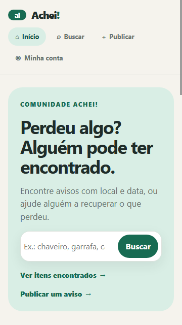
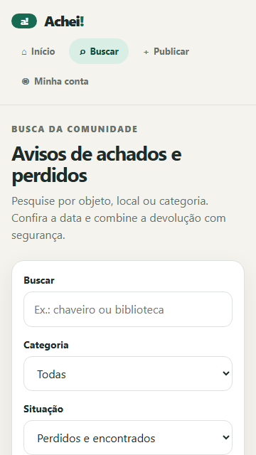
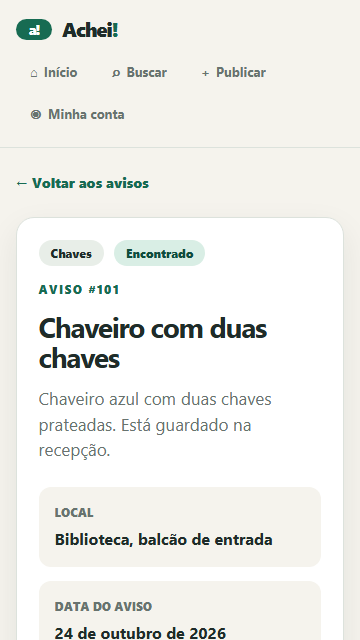
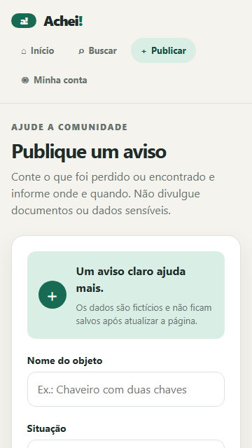
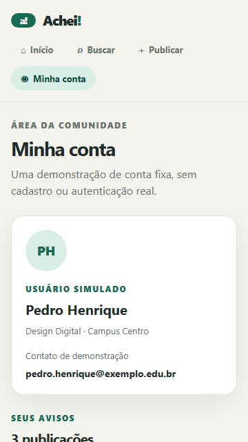
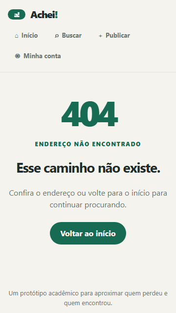
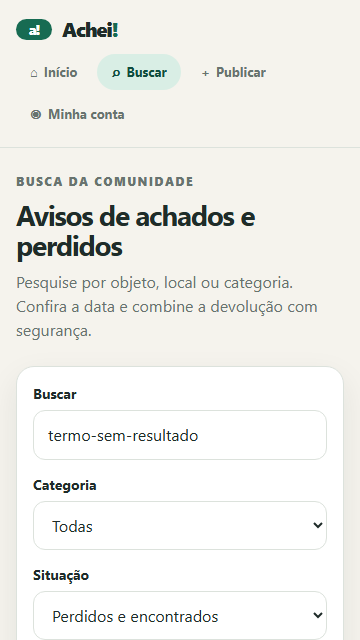
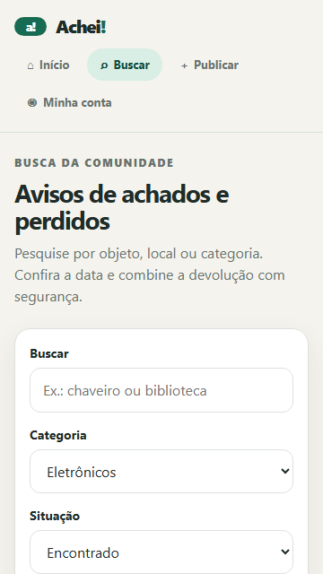

Achei!
Desafio 1 · O mesmo esqueleto, outro negócio
Relatório de desenvolvimento
Tema: achados e perdidos · Aplicação web com dados mockados · Protótipo acadêmico
R1 — O problema e quem usa
Objetos perdidos no campus podem ficar sem destino porque avisos se espalham por conversas e publicações que desaparecem. O Achei! reúne os registros em um só lugar e destaca situação, data, localização e pessoa publicadora.
Pergunta principal: onde e quando este objeto foi visto, e com quem posso combinar a devolução?
1. Procurar
Uma estudante perde a garrafa após a aula, busca pelo objeto ou pelo bloco e confere os avisos mais recentes.
2. Devolver
Alguém encontra um chaveiro, registra o local e a data e orienta a retirada na recepção.
3. Confirmar
Uma pessoa vê um anúncio de caderno, abre os detalhes e combina a devolução sem publicar informações sensíveis.
R2 — Mapa de equivalência
Conceito do KiOferta
Equivalência no Achei!
Produto
Objeto procurado ou encontrado: chave, documento, eletrônico ou material escolar.
Oferta
Aviso publicado com situação, descrição, local e data.
Mercado
Local onde o objeto foi visto ou está guardado: sala, bloco, biblioteca ou portaria.
Preço
Não se aplica: não há venda. A situação (perdido/encontrado) orienta a decisão.
Distância
Proximidade inferida pelo local e pela data; não há GPS nem cálculo de distância.
Contribuinte
Pessoa publicadora identificada por uma conta fixa e simulada.
Visitante
Pessoa que pesquisa e consulta os avisos sem cadastro.
index.html: ponto de entrada, menu e contêiner #app.
tokens.css: cores, espaçamentos e medidas compartilhadas.
base.css / style.css: reset, regras globais e importação dos estilos.
main.js: interpreta hash/consulta e renderiza a rota após navegação.
rotas.js: catálogo único das seis telas.
navbar.js: cria os links a partir do catálogo de rotas.
dadosMockados: 12 avisos, quatro usuários e quatro publicadores.
paginas: renderização e CSS separados por tela/componente.
R4 — Três decisões e um descartado
1. Local e data antes de qualquer contato
São os sinais que ajudam a decidir se o aviso pode corresponder ao objeto. A busca também considera categoria e situação.
2. Conta fixa e dados em memória
O protótipo segue a restrição de não usar autenticação, backend ou banco; publicar demonstra o fluxo sem prometer persistência.
3. Hash com filtros na URL
Os parâmetros permitem compartilhar/recarregar uma busca, e `hashchange` mantém as seis telas no padrão didático do projeto de referência.
Alternativa descartada: mapa/GPS
Seria necessário obter localização, permissão e possivelmente serviço externo; a localização textual é mais simples e compatível com os dados mockados.
2 / 5
Achei!Equipe e aprendizados
R5 — Divisão de tarefas
Distribuição sugerida a partir das frentes do enunciado; confirmar que corresponde ao trabalho efetivamente feito por cada pessoa antes da entrega.
Integrante
Responsabilidade / entrega prevista
Commit próprio
Pedro Henrique
Desenvolvimento do relatório e das rotas do código.
Ainda sem commits
Daniel Silva Marques
Apoio no desenvolvimento do CSS de todas as páginas.
Ainda sem commits
Leonardo Severo
Desenvolvimento de index.html e das lógicas JavaScript dentro de src/.
Ainda sem commits
O grupo informou que ainda não tem commits. Após criá-los, atualizem esta tabela com os hashes reais e verifiquem se o histórico corresponde às responsabilidades listadas.
R6 — Duas dificuldades reais
1. A confirmar pelo grupo
O grupo informou que ainda não sabe qual dificuldade relatar.
Qual erro apareceu? Não informado. Qual foi a suspeita inicial? Não informada. Qual era a causa verdadeira? Não informada.
Preencham com um problema técnico que realmente aconteceu durante o desenvolvimento.
2. A confirmar pelo grupo
O grupo informou que ainda não sabe qual segunda dificuldade relatar.
Qual erro apareceu? Não informado. Qual foi a suspeita inicial? Não informada. Qual era a causa verdadeira? Não informada.
Descrevam outra dificuldade real; não reutilizem uma limitação prevista pelo enunciado como se fosse um erro.
Esta seção permanece incompleta até o grupo registrar duas dificuldades reais, incluindo o erro observado, a suspeita inicial e a causa verdadeira.
3 / 5
Achei!Limites e capturas · viewport de 360 px
R7 — O que ficou de fora
Não foram implementados backend, banco de dados, login/cadastro real, persistência após F5, GPS/mapa, mensagens entre usuários, moderação ou upload de fotos. O escopo exige dados mockados, não autentica e não precisa salvar alterações; mapa e mensagens também ampliariam o projeto além das telas pedidas. Os contatos exibidos são fictícios.
Capturas das telas (360 px)
Capturas do protótipo em viewport de 360 px de largura. Os registros são demonstrativos.

1. Início

2. Resultados

3. Detalhe

4. Publicar
4 / 5
Achei!Capturas em viewport de 360 px

5. Minha conta

6. Rota inexistente

Busca sem resultados

Busca + filtro por situação
A busca combina termo, categoria e situação sem recarregar a página inteira. A rota inexistente e o estado sem resultados oferecem caminhos de retorno.